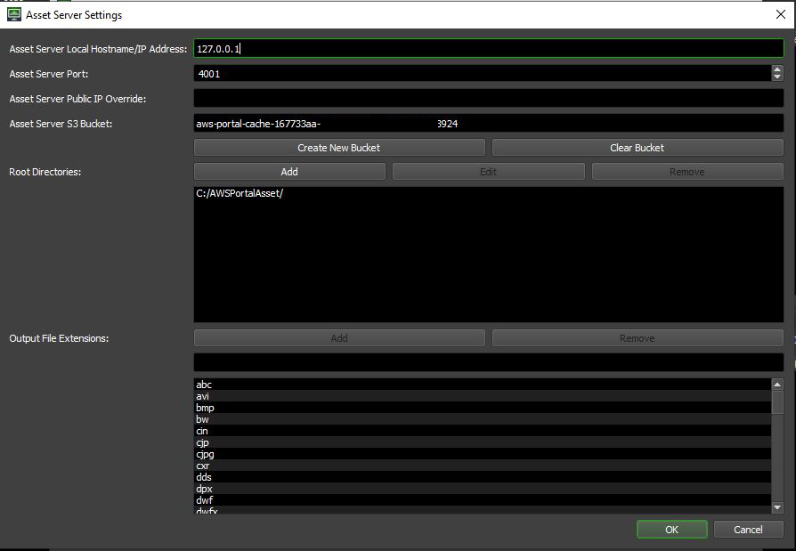

Note
While AWS Portal can enable cloud rendering in Deadline 10, AWS Deadline Cloud is a newer offering that has been built specifically for the cloud. It is a fully managed service that does not require installation or maintenance of infrastructure (e.g., repository, database, or license server). Worker fleet auto-scaling, asset synching, and licensing are all managed natively within AWS by Deadline Cloud. See here for more information on Deadline Cloud and its capabilities.
Asset Server Options¶
Overview¶
This dialog allows you to configure some basic settings for the AWS Portal Asset Sever.
Note that you will need to have installed the AWS Portal Link and Asset Server for these options to have any effect.
Server Address and Port¶
To change the address of the machine the AWS Portal Asset Server is running on or the port that the server is listening on, simply modify the ‘Server IP Address’ or ‘Server Port’ lines respectively. By default, this will be populated with the values that were set during the installation of the AWS Asset Server.
Public IP Override¶
For security reasons, AWS will only accept incoming requests from a source IP address. By default, Deadline will use checkip.amazonaws.com to determine what your public IP address is. If you have a firewall that prevents access to that site or that site does not provide an accurate public IP address, you can use this setting to override it. Remember, this is your public IP address, not the internal IP address of your machine.
S3 Bucket¶
The S3 bucket that all of your assets will be transferred to. Here, you can:
Create New Bucket
Create a new S3 bucket to use in the asset transfer system.
Clear Bucket
Clear the contents of the bucket.
Root Directories¶
The Root Directories list contains the directories that AWS Portal Asset Server will use to sync assets between the local on-premise machine and the Deadline AWS Portal Instance. You are able to use both UNC or Mapped drives as a root directory. Path mapping for the listed directories is automatically applied upon creation of a new infrastructure. Only the root directory of all assets is required for the process to work.
Examples:
C:\users\me\documents\myassetfiles\ <-- If asset files are stored locally and everything is running on one machine (not recommended)
/home/me/documents/myassetfiles/ <-- Same as above, but on Linux
X:\assets\ <-- Letter mapped network file share
/mnt/myfileserver/assets/ <-- Mounted file share (Linux)
\\myfileserver\assets/ <-- UNC path
//myfileserver/assets/
Output File Extensions¶
This is the list of file extensions that are on an allow list in order to be downloaded back from the AWS Portal instance after a render task has completed. These are global settings for all AWS Portal instances and jobs rendered on them. If you want to set job specific file extensions on an allow list, you can do so in the Job Properties dialog. You can only enter one file extension per line and it must be the complete name of the file extension. Wildcard characters are not supported at this time. Both the file extensions added here and the ones added at the Job Properties level hold the same precedence. Duplicate entries do not have any detrimental effects.

{kind=link}